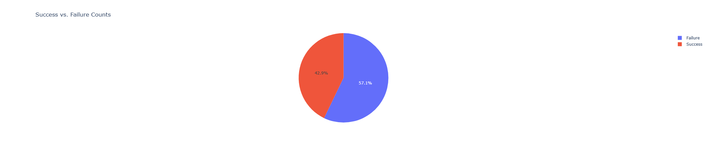

Capstone project: Data wrangling, EDA, ML, SQL, and web scraping.

Capstone: Data collection, wrangling, visualization, dashboarding.
Comprehensive EDA and price modeling.
Cross-cultural analytics and prediction.
Real estate analytics and investment insights.
Classification, clustering, regression, and more.
Text processing, embeddings, and advanced NLP.
Practice notebooks and Python experiments.
SQL analysis, queries, and data stories.
Dashboards, plots, and interactive visualizations.
Changelog and documentation updates.
Interactive notebook for portfolio navigation.
This portfolio is automatically updated and published using GitHub Actions and GitHub Pages. All notebooks are available as interactive HTML for easy browsing.
Last updated: June 13, 2025